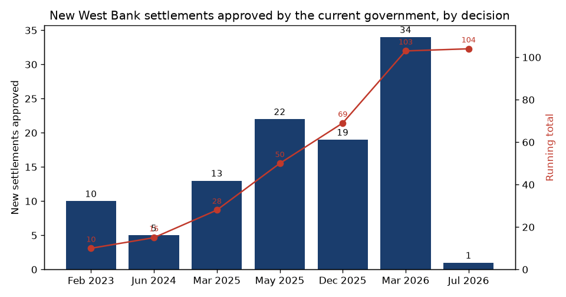
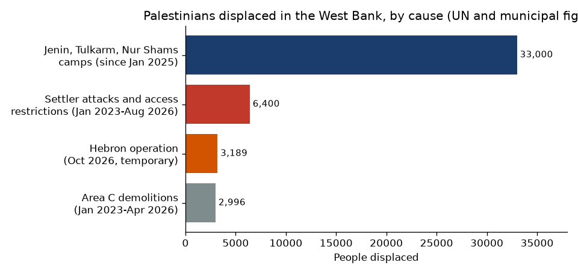

"The revolution in northern Samaria": new settlements, displacement, and two ways of telling it
Prepared November 3, 2026 (Israel time, UTC+2). Built from two items: a Hebrew X post with a settlement map (Nov. 3) and a +972 Magazine / Local Call report (Oct. 26). Claims are labeled by who makes them. Items marked unconfirmed rest on one source or could not be checked. Numbers in square brackets refer to the Sources list.
Key points
Since taking office in December 2022, the outgoing government has approved 104 new West Bank settlements, according to the settlement watchdog Peace Now's count as of July 2026 [3][4]. Before this government there were about 127 to 144 official settlements, depending on how they are counted, and only six new ones were formally approved between 1993 and 2022 [4][5].
All four northern West Bank settlements evacuated in 2005 (Homesh, Sa-Nur, Ganim and Kadim) were repopulated in 2026, after the Knesset repealed the Disengagement Law's entry ban in March 2023 [6][7][8][9].
The X post celebrates this as a "revolution" and shares a map of new and planned settlements in northern Samaria and the Jordan Valley. The +972 report describes the same period as a "transformation" that is displacing Palestinians, through settler violence, military operations, and movement limits [1][2].
UN figures broadly back +972's displacement numbers: about 33,000 refugees displaced from three northern camps since January 2025, and about 130 Palestinian communities fully or partly displaced by settler attacks and access limits since January 2023 [10][11][12].
Source 1: the X post
On November 3, 2026, at 8:38 a.m. Israel time, Simcha Raz (@simkha0404), who describes himself as a reporter for the religious-Zionist weekly Olam Katan covering settlement, posted (our translation from Hebrew) [1]:
"An amazing map by @BenTzionMacales of the revolution in northern Samaria and the Jordan Valley. Names in white: veteran communities. Names in orange: new communities. Orange triangles: communities that were approved and not yet settled (some have farms)."
The post does not share the +972 article and has no link to it. It adds its own content: a map made by Ben-Tzion Macales on an OpenStreetMap base. We are not reproducing the map because its owner has not licensed it for reuse. See it on X. As we read its labels, the orange "new" communities include Ganim, Kadim, Sa-Nur and Homesh, plus newer names such as Emek Dotan, Eival and Shalem. Our reading of the smaller Hebrew labels is unconfirmed. When the post was checked it had about 800 views and 18 likes.
Source 2: the +972 Magazine report
"How Israel's outgoing government remade the West Bank", by Shatha Yaish, Oren Ziv and Basel Adra, ran on October 26, 2026, with the Hebrew site Local Call [2]. +972 is a left-wing outlet that is strongly critical of the occupation. In the same article it calls the war in Gaza a "genocide" and settler attacks "pogroms." Its main claims, as +972's claims:
"At least 1,341" Palestinians were killed by soldiers and settlers in the West Bank and East Jerusalem since the start of 2023. Unconfirmed as an exact figure. UNICEF counts at least 1,216 from October 7, 2023 to September 9, 2026 [13]. That is a shorter period, so the two numbers are broadly consistent.
"State-backed settler pogroms" have fully or partly displaced at least 127 communities. OCHA counts 130 communities through August 2026, 48 of them fully emptied [11]. Confirmed in substance, though "pogroms" and "state-backed" are +972's words.
Operations in three northern refugee camps have left 30,000 people homeless. UNRWA, cited by OCHA, says more than 33,000 people have been displaced [10]. Confirmed.
About 3,000 people were displaced in a new Hebron operation. Hebron municipality said 3,189, and the Washington Post reported on Nov. 2 that the operation had ended and about 3,300 people had gone home [14]. Confirmed, but temporary.
The government approved "at least 103" settlements, including in E1. Peace Now and the Times of Israel give 103 as of March 2026 and 104 after July 2026 [3][4][5]. Confirmed.
A tender for more than 3,400 housing units in E1 was published last December, and bidding opened in August. The tender for 3,401 units was published on December 10, 2025, and bidding opened in August 2026 for a first 1,234 units [15][16]. Confirmed.
Ganim and Kadim were "re-established earlier this year after the government repealed parts of the Disengagement Law." Confirmed [6][8][9].
The report also includes village-level accounts: Al-Mughayyir surrounded by "at least 11" outposts and nine residents killed since October 2023; the Tubasi family of Jalud burned out after a court-ordered return on September 28; and a farmer in Idhna paralyzed by a settler's bullet. These are unconfirmed. They rest on residents' accounts gathered by +972. The army had not responded when the report ran.
Disengagement Law amendment (March 21-22, 2023). It canceled sections 23-27 of the 2005 law, which barred Israelis from the four evacuated northern sites [6].
Settlement approvals by the security cabinet. Six batches from February 2023 to March 2026, plus Sa-Nur East in July 2026. The cabinet's decisions are classified, so the counts come from media reports and Peace Now [3][4][5]. Peace Now breaks the 104 into 16 former "neighborhoods" given independent status, 50 unauthorized outposts to be legalized, and 38 entirely new settlements [4]. Few have finished Civil Administration planning [5].
Funding. More than NIS 1 billion was allocated to build the new settlements, raised to NIS 1.3 billion according to Peace Now [3]. The exact sum and date are unconfirmed.
E1. The Higher Planning Council approved the E1 plans in August 2025, the tender was published in December 2025, and bidding opened in August 2026 [15][16].

New settlements approved, by decision. Feb. 2023: 9 plus Tel Zion; June 2024: 5; March 2025: 13; May 2025: 22; Dec. 2025: 19; March 2026: 34; July 2026: Sa-Nur East. Total: 104. Data: Peace Now, "Annus Mirabilis" (July 2026) and its Sa-Nur East update [3][4]; total cross-checked with the Times of Israel [5]. Made for this page.

Displacement by cause. The categories cover different periods and are not additive. Camps: UNRWA via OCHA, "more than 33,000" [10]. Settler attacks and access limits: OCHA, "more than 6,400" since January 2023 [11]. Demolitions in Area C: OCHA via Amnesty, January 2023 to April 2026 [12]. Hebron: municipality figure, mostly returned by Nov. 2 [14]. Made for this page.
The government and settlement side
The purpose is stated openly. Ministers do not deny the political aim that +972 describes. Finance Minister Bezalel Smotrich said E1 approval "buries the idea of a Palestinian state" [15]. He called Sa-Nur's return a "historic correction" of the "sinful expulsion from northern Samaria" [8], and he spoke of "establishing 104 communities and more than 160 farms" [9]. Settlement Minister Orit Strock called Homesh "the arrowhead" to correct "the sins of the disengagement" and "of Oslo" [7].
Security argument. Supporters say a civilian presence in northern Samaria, the Jenin and Tulkarm area that became a center of armed groups, helps the army keep control. They argue the 2005 pullout left a vacuum. The army has framed the camp operations (Iron Wall) and the October Hebron operation as counterterrorism. The Hebron operation followed the killing of two soldiers at a checkpoint [14]. Not all security officials agree. Chief of Staff Eyal Zamir reportedly warned in March 2026 that more settlements could stretch the army too thin [4].
Legal argument. The government holds that Jews may legally live in Judea and Samaria and that Area C is subject to Israeli planning control. In August 2023 the High Court allowed the Homesh yeshiva to stay after it moved off private Palestinian land [7].
On violence. Prime Minister Netanyahu has described violent settlers as a small fringe of about 150 young extremists, separate from the settlement movement. +972 quotes a Jalud resident disputing this [2].
Context
The two sources describe the same facts on the ground, with opposite values attached. The settlement count, the return to the four evacuated sites, and the E1 tender are matters of record. Ministers celebrate them, and Peace Now and +972 oppose them. On displacement, +972's headline numbers match UN data. Its stronger claims are interpretation, not checked fact: that the violence is "state-backed" and part of a deliberate plan to expel Palestinians. The government's new plans for these settlements may change after the October 27 Knesset election.
Sources
Simcha Raz (@simkha0404), X post, Nov. 3, 2026, read via the X API.
+972 Magazine / Local Call, "How Israel's outgoing government remade the West Bank," Oct. 26, 2026.